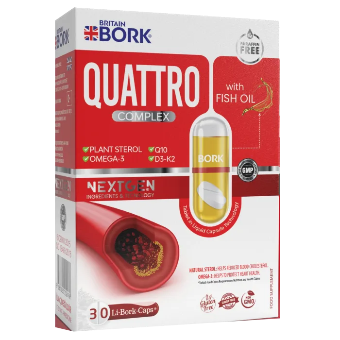
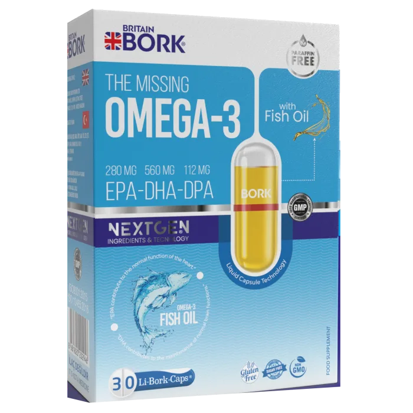
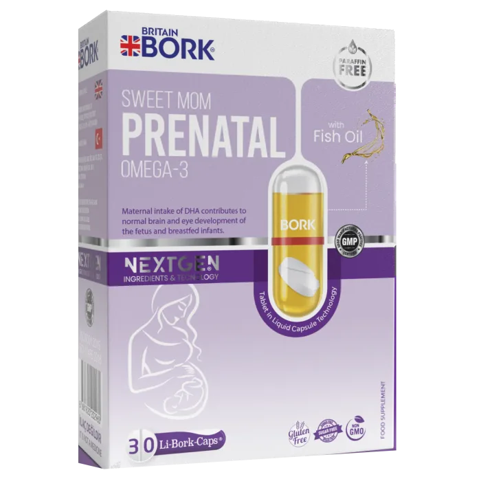
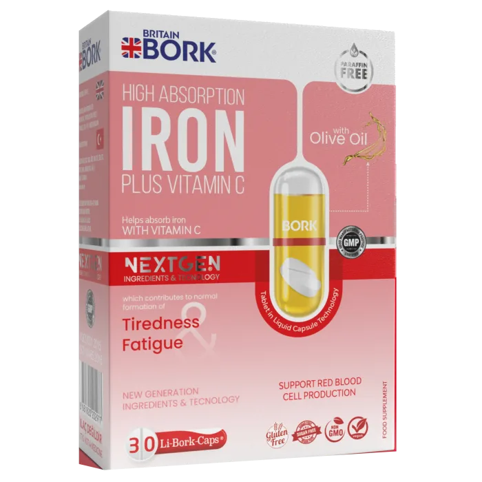

Toz esaslı tablet ve kapsüllerin aksine, aktif maddeler sıvı fazda, çözülmüş ve yoğun konsantrasyonda bulunur: vücut 2-5 dakikada, kayıpsız emer. Li-Bork-Caps® hattı yalnızca Britain Bork'ta.
Ürünleri Keşfet Teknolojiyi İncele
Tek kapsülde iki aktif form: katı tablet ve sıvı taşıyıcı yağ. Bu yapı daha yüksek biyoyararlanım, oksidasyona karşı koruma ve tat maskeleme sağlar.
Vitamin ve mineraller sıkıştırılmış tablet formunda, kapsülün tam merkezinde korunur.
Tabletin etrafını saran taşıyıcı yağ, emilimi destekler ve tableti oksidasyondan korur.
Vücutta iki farklı hızda açığa çıkan etken maddeler, klasik kapsüllere göre daha etkili emilir.
Tüm ürünler GMP ve ISO 9001/14001/22000 standartlarında, Halal sertifikalı üretim tesislerinde hazırlanır.



"Kapsülün içindeki tablet fikri gerçekten işe yarıyor, mide rahatsızlığı yaşamadım."
"Hamilelik döneminde doktorumun önerisiyle kullandım, içim rahat."
"Demir takviyeleri genelde midemi bozardı, bu formülde hiç sorun yaşamadım."
GMP · ISO 9001 · ISO 14001 · ISO 22000 · Halal sertifikalı tesislerde üretilir.
Sertifikaları İncele